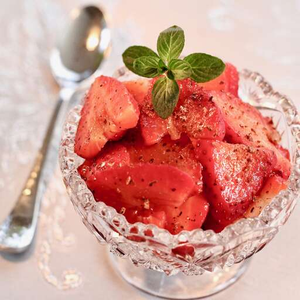

Italian Macerated Strawberries

Description
These macerated strawberries are a popular Italian summer dessert. The combination of ingredients might be surprising, but it tastes delicious. Someone always asks me for the recipe when I make it. Be sure to use good-quality balsamic vinegar.
Ingredients
- 1/4 cup balsamic vinegar
- 2 tablespoons white sugar
- 1 teaspoon freshly ground black pepper
- 2 pints fresh strawberries, hulled and quartered
- 1 (1 ounce) unsweetened chocolate, grated, or to taste
Steps
- Combine vinegar, sugar, and black pepper together in
a bowl. Stir in strawberries to coat; marinate in the
refrigerator until chilled, about 10 minutes.
-
Garnish with grated chocolate before serving.
Links to other pages